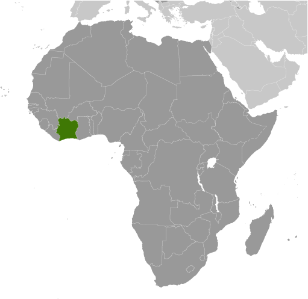
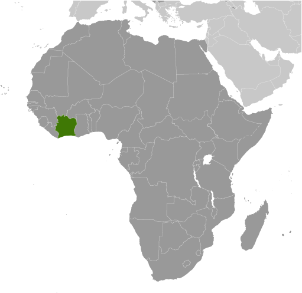

Africa :: COTE D'IVOIRE
Introduction :: COTE D'IVOIRE
-
Close ties to France following independence in 1960, the development of cocoa production for export, and foreign investment all made Cote d'Ivoire one of the most prosperous of the West African states but did not protect it from political turmoil. In December 1999, a military coup - the first ever in Cote d'Ivoire's history - overthrew the government. Junta leader Robert GUEI blatantly rigged elections held in late 2000 and declared himself the winner. Popular protest forced him to step aside and brought Laurent GBAGBO into power. Ivorian dissidents and disaffected members of the military launched a failed coup attempt in September 2002 that developed into a rebellion and then a civil war. The war ended in 2003 with a cease-fire that left the country divided with the rebels holding the north, the government the south, and peacekeeping forces a buffer zone between the two. In March 2007, President GBAGBO and former New Forces rebel leader Guillaume SORO signed an agreement in which SORO joined GBAGBO's government as prime minister and the two agreed to reunite the country by dismantling the buffer zone, integrating rebel forces into the national armed forces, and holding elections. Difficulties in preparing electoral registers delayed balloting until 2010. In November 2010, Alassane Dramane OUATTARA won the presidential election over GBAGBO, but GBAGBO refused to hand over power, resulting in a five-month stand-off. In April 2011, after widespread fighting, GBAGBO was formally forced from office by armed OUATTARA supporters with the help of UN and French forces. Several thousand UN peacekeepers and several hundred French troops remain in Cote d'Ivoire to support the transition process. OUATTARA is focused on rebuilding the country's economy and infrastructure while rebuilding the security forces. GBAGBO is in The Hague awaiting trial for crimes against humanity.
Geography :: COTE D'IVOIRE
-
Western Africa, bordering the North Atlantic Ocean, between Ghana and Liberia8 00 N, 5 00 WAfricatotal: 322,463 sq kmland: 318,003 sq kmwater: 4,460 sq kmcountry comparison to the world: 69slightly larger than New Mexicototal: 3,458 kmborder countries (5): Burkina Faso 545 km, Ghana 720 km, Guinea 816 km, Liberia 778 km, Mali 599 km515 kmterritorial sea: 12 nmexclusive economic zone: 200 nmcontinental shelf: 200 nmtropical along coast, semiarid in far north; three seasons - warm and dry (November to March), hot and dry (March to May), hot and wet (June to October)mostly flat to undulating plains; mountains in northwestmean elevation: 250 melevation extremes: lowest point: Gulf of Guinea 0 mhighest point: Monts Nimba 1,752 mpetroleum, natural gas, diamonds, manganese, iron ore, cobalt, bauxite, copper, gold, nickel, tantalum, silica sand, clay, cocoa beans, coffee, palm oil, hydropoweragricultural land: 64.8%arable land 9.1%; permanent crops 14.2%; permanent pasture 41.5%forest: 32.7%other: 2.5% (2011 est.)730 sq km (2012)coast has heavy surf and no natural harbors; during the rainy season torrential flooding is possibledeforestation (most of the country's forests - once the largest in West Africa - have been heavily logged); water pollution from sewage and industrial and agricultural effluentsparty to: Biodiversity, Climate Change, Climate Change-Kyoto Protocol, Desertification, Endangered Species, Hazardous Wastes, Law of the Sea, Marine Dumping, Ozone Layer Protection, Ship Pollution, Tropical Timber 83, Tropical Timber 94, Wetlands, Whalingsigned, but not ratified: none of the selected agreementsmost of the inhabitants live along the sandy coastal region; apart from the capital area, the forested interior is sparsely populated
People and Society :: COTE D'IVOIRE
-
23,740,424note: estimates for this country explicitly take into account the effects of excess mortality due to AIDS; this can result in lower life expectancy, higher infant mortality, higher death rates, lower population growth rates, and changes in the distribution of population by age and sex than would otherwise be expected (July 2016 est.)country comparison to the world: 54noun: Ivoirian(s)adjective: IvoirianAkan 32.1%, Voltaique or Gur 15%, Northern Mande 12.4%, Krou 9.8%, Southern Mande 9%, other 21.2% (includes European and Lebanese descent), unspecified 0.5% (2011-12 est.)French (official), 60 native dialects of which Dioula is the most widely spokenMuslim 40.2%, Catholic 19.4%, Evangelical 19.3%, Methodist 2.5%, other Christian 4.5%, animist or no religion 12.8%, other religion/unspecified 1.4% (2011-12 est.)note: the majority of foreign migrant workers are Muslim (72%) and Christian (18%) (2014 est.)Cote d’Ivoire’s population is likely to continue growing for the foreseeable future because almost 60% of the populace is younger than 25, the total fertility rate is holding steady at about 3.5 children per woman, and contraceptive use is under 20%. The country will need to improve education, health care, and gender equality in order to turn its large and growing youth cohort into human capital. Even prior to 2010 unrest that shuttered schools for months, access to education was poor, especially for women. As of 2015, only 53% of men and 33% of women were literate. The lack of educational attainment contributes to Cote d’Ivoire’s high rates of unskilled labor, adolescent pregnancy, and HIV/AIDS prevalence.Following its independence in 1960, Cote d’Ivoire’s stability and the blossoming of its labor-intensive cocoa and coffee industries in the southwest made it an attractive destination for migrants from other parts of the country and its neighbors, particularly Burkina Faso. The HOUPHOUET-BOIGNY administration continued the French colonial policy of encouraging labor immigration by offering liberal land ownership laws. Foreigners from West Africa, Europe (mainly France), and Lebanon composed about 25% of the population by 1998.Ongoing economic decline since the 1980s and the power struggle after HOUPHOUET-BOIGNY’s death in 1993 ushered in the politics of “Ivoirite,” institutionalizing an Ivoirian identity that further marginalized northern Ivoirians and scapegoated immigrants. The hostile Muslim north-Christian south divide snowballed into a 2002 civil war, pushing tens of thousands of foreign migrants, Liberian refugees, and Ivoirians to flee to war-torn Liberia or other regional countries and more than a million people to be internally displaced. Subsequently, violence following the contested 2010 presidential election prompted some 250,000 people to seek refuge in Liberia and other neighboring countries and again internally displaced as many as a million people. By July 2012, the majority had returned home, but ongoing inter-communal tension and armed conflict continue to force people from their homes.0-14 years: 37.45% (male 4,483,215/female 4,407,595)15-24 years: 20.93% (male 2,504,188/female 2,463,970)25-54 years: 34.05% (male 4,133,975/female 3,950,734)55-64 years: 4.15% (male 493,722/female 491,230)65 years and over: 3.42% (male 389,551/female 422,244) (2016 est.)total dependency ratio: 83.5%youth dependency ratio: 77.9%elderly dependency ratio: 5.6%potential support ratio: 18% (2015 est.)total: 20.7 yearsmale: 20.8 yearsfemale: 20.6 years (2016 est.)country comparison to the world: 1871.88% (2016 est.)country comparison to the world: 5428.2 births/1,000 population (2016 est.)country comparison to the world: 459.5 deaths/1,000 population (2016 est.)country comparison to the world: 550 migrant(s)/1,000 population (2016 est.)country comparison to the world: 85urban population: 54.2% of total population (2015)rate of urbanization: 3.69% annual rate of change (2010-15 est.)YAMOUSSOUKRO (capital) 259,000 (2014); ABIDJAN (seat of government) 4.86 million; Bouake 762,000 (2015)at birth: 1.03 male(s)/female0-14 years: 1.02 male(s)/female15-24 years: 1.02 male(s)/female25-54 years: 1.05 male(s)/female55-64 years: 1.01 male(s)/female65 years and over: 0.93 male(s)/femaletotal population: 1.02 male(s)/female (2016 est.)19.8note: median age at first birth among women 25-29 (2011/12 est.)645 deaths/100,000 live births (2015 est.)country comparison to the world: 27total: 57.2 deaths/1,000 live birthsmale: 63.1 deaths/1,000 live birthsfemale: 51.1 deaths/1,000 live births (2016 est.)country comparison to the world: 22total population: 58.7 yearsmale: 57.5 yearsfemale: 59.9 years (2016 est.)country comparison to the world: 2033.46 children born/woman (2016 est.)country comparison to the world: 4618.2% (2011/12)5.7% of GDP (2014)country comparison to the world: 780.14 physicians/1,000 population (2008)0.4 beds/1,000 population (2006)improved:urban: 93.1% of populationrural: 68.8% of populationtotal: 81.9% of populationunimproved:urban: 6.9% of populationrural: 31.2% of populationtotal: 18.1% of population (2015 est.)improved:urban: 32.8% of populationrural: 10.3% of populationtotal: 22.5% of populationunimproved:urban: 67.2% of populationrural: 89.7% of populationtotal: 77.5% of population (2015 est.)3.17% (2015 est.)country comparison to the world: 18464,700 (2015 est.)country comparison to the world: 1625,100 (2015 est.)country comparison to the world: 14degree of risk: very highfood or waterborne diseases: bacterial diarrhea, hepatitis A, and typhoid fevervectorborne diseases: malaria, dengue fever, and yellow feverwater contact disease: schistosomiasisanimal contact disease: rabiesrespiratory disease: meningococcal meningitis (2016)8% (2014)country comparison to the world: 14915.7% (2012)country comparison to the world: 434.7% of GDP (2014)country comparison to the world: 89definition: age 15 and over can read and writetotal population: 43.1%male: 53.1%female: 32.5% (2015 est.)total: 9 yearsmale: 10 yearsfemale: 8 years (2014)total number: 1,796,802percentage: 35% (2006 est.)
Government :: COTE D'IVOIRE
-
conventional long form: Republic of Cote d'Ivoireconventional short form: Cote d'Ivoirelocal long form: Republique de Cote d'Ivoirelocal short form: Cote d'Ivoirenote: pronounced coat-div-wharformer: Ivory Coastetymology: name reflects the intense ivory trade that took place in the region from the 15th to 17th centuriespresidential republicname: Yamoussoukro; note - although Yamoussoukro has been the official capital since 1983, Abidjan remains the commercial and administrative center; the US, like other countries, maintains its Embassy in Abidjangeographic coordinates: 6 49 N, 5 16 Wtime difference: UTC 0 (5 hours ahead of Washington, DC, during Standard Time)12 districts and 2 autonomous districts*; Abidjan*, Bas-Sassandra, Comoe, Denguele, Goh-Djiboua, Lacs, Lagunes, Montagnes, Sassandra-Marahoue, Savanes, Vallee du Bandama, Woroba, Yamoussoukro*, Zanzan7 August 1960 (from France)Independence Day, 7 August (1960)previous 1960; latest approved by referendum 23 July 2000; amended 2004, 2012 (2016)civil law system based on the French civil code; judicial review of legislation held in the Constitutional Chamber of the Supreme Courtaccepts compulsory ICJ jurisdiction with reservations; accepts ICCt jurisdictioncitizenship by birth: nocitizenship by descent only: at least one parent must be a citizen of Cote d'Ivoiredual citizenship recognized: noresidency requirement for naturalization: 5 years18 years of age; universalchief of state: President Alassane Dramane OUATTARA (since 4 December 2010)head of government: Prime Minister Daniel Kablan DUNCAN (since 21 November 2012)cabinet: Council of Ministers appointed by the presidentelections/appointments: president directly elected by absolute majority popular vote in 2 rounds if needed for a 5-year term (no term limits); election last held on 25 October 2015 (next to be held in 2020); prime minister appointed by the presidentelection results: Alassane OUATTARA elected president; percent of vote - Alassane OUATTARA (RDR) 83.7%, Pascal Affi N'GUESSAN (ADF) 9.3%, Konan Bertin KOUADIO (independent) 3.9%, other 3.1%description: unicameral National Assembly or Assemblee Nationale (255 seats; members directly elected in single- and multi-seat constituencies by simple majority vote to serve 5-year terms)elections: last held on 11 December 2011 (next to be held on 18 December 2016)election results: percent of vote by party - RDR 42.1%, PDCI 28.6%, UDPCI 3.1%, RDP 1.7%, other 24.5%; seats by party - RDR 122, PDCI 76, UDPCI 6, RDP 4, other 16, independents 31highest court(s): Supreme Court or Cour Supreme (organized into Judicial, Audit, Constitutional, and Administrative Chambers; consists of the court president, 3 vice-presidents for the Judicial, Audit, and Administrative chambers, and 9 associate justices or magistrates)judge selection and term of office: judges nominated by the Superior Council of the Magistrature, a 7-member body consisting of the national president (chairman), 3 "bench" judges, and 3 public prosecutors; judges appointed for lifesubordinate courts: Courts of Appeal (organized into civil, criminal, and social chambers); first instance courts; peace courtsDemocratic Party of Cote d'Ivoire or PDCI [Henri Konan BEDIE]Movement of the Future Forces or MFA [Innocent Augustin ANAKY KOBENA]Rally of Houphouetists for Democracy and PeaceRally of the Republicans or RDR [Alassane OUATTARA]Union for Cote d'Ivoire or UPCI [Gnamien KONA]Union for Democracy and Peace in Cote d'Ivoire or UDPCI [Toikeuse MABRI]more than 144 smaller registered partiesFederation of University and High School Students of Cote d'Ivoire or FESCI [Augustin MIAN]National Congress for the Resistance and Democracy or CNRD [Bernard DADIE]Panafrican Congress for Justice and Peoples Equality or COJEP [Roselin BLY]Rally of Houphouetists for Democracy and Peace or RHDPACP, AfDB, AU, ECOWAS, EITI (compliant country), Entente, FAO, FZ, G-24, G-77, IAEA, IBRD, ICAO, ICC, ICCt, ICRM, IDA, IDB, IFAD, IFC, IFRCS, ILO, IMF, IMO, Interpol, IOC, IOM, IPU, ISO, ITSO, ITU, ITUC (NGOs), MIGA, MINUSMA, MONUSCO, NAM, OIC, OIF, OPCW, UN, UNCTAD, UNESCO, UNHCR, UNIDO, Union Latina, UNWTO, UPU, WADB (regional), WAEMU, WCO, WFTU (NGOs), WHO, WIPO, WMO, WTOchief of mission: Ambassador Daouda DIABATE (since 11 February 2011)chancery: 2424 Massachusetts Avenue NW, Washington, DC 20008telephone: [1] (202) 797-0300FAX: [1] (202) 462-9444chief of mission: Ambassador Terence Patrick MCCULLEY (since 21 November 2013)embassy: Cocody Riviera Golf 01, Abidjanmailing address: B. P. 1712, Abidjan 01telephone: [225] 22 49 40 00FAX: [225] 22 49 42 02three equal vertical bands of orange (hoist side), white, and green; orange symbolizes the land (savannah) of the north and fertility, white stands for peace and unity, green represents the forests of the south and the hope for a bright futurenote: similar to the flag of Ireland, which is longer and has the colors reversed - green (hoist side), white, and orange; also similar to the flag of Italy, which is green (hoist side), white, and red; design was based on the flag of Franceelephant; national colors: orange, white, greenname: "L'Abidjanaise" (Song of Abidjan)lyrics/music: Mathieu EKRA, Joachim BONY, and Pierre Marie COTY/Pierre Marie COTY and Pierre Michel PANGOnote: adopted 1960; although the nation's capital city moved from Abidjan to Yamoussoukro in 1983, the anthem still owes its name to the former capital
Economy :: COTE D'IVOIRE
-
Cote d'Ivoire is heavily dependent on agriculture and related activities, which engage roughly two-thirds of the population. Cote d'Ivoire is the world's largest producer and exporter of cocoa beans and a significant producer and exporter of coffee and palm oil. Consequently, the economy is highly sensitive to fluctuations in international prices for these products and in climatic conditions. Cocoa, oil, and coffee are the country's top export revenue earners, but the country is also mining gold.Following the end of more than a decade of civil conflict in 2011, Cote d’Ivoire has experienced a boom in foreign investment and economic growth. In June 2012, the IMF and the World Bank announced $4.4 billion in debt relief for Cote d'Ivoire under the Highly Indebted Poor Countries Initiative.$78.62 billion (2015 est.)$72.39 billion (2014 est.)$67.08 billion (2013 est.)note: data are in 2015 US dollarscountry comparison to the world: 92$31.17 billion (2015 est.)8.6% (2015 est.)7.9% (2014 est.)8.7% (2013 est.)country comparison to the world: 6$3,300 (2015 est.)$3,100 (2014 est.)$3,000 (2013 est.)note: data are in 2015 US dollarscountry comparison to the world: 18416% of GDP (2015 est.)16.3% of GDP (2014 est.)17.1% of GDP (2013 est.)country comparison to the world: 106household consumption: 65%government consumption: 14.9%investment in fixed capital: 16.1%investment in inventories: 1%exports of goods and services: 45.4%imports of goods and services: -42.4% (2015 est.)agriculture: 18.9%industry: 19.4%services: 61.8% (2015 est.)coffee, cocoa beans, bananas, palm kernels, corn, rice, cassava (manioc, tapioca), sweet potatoes, sugar, cotton, rubber; timberfoodstuffs, beverages; wood products, oil refining, gold mining, truck and bus assembly, textiles, fertilizer, building materials, electricity8.7% (2015 est.)country comparison to the world: 178.34 million (2015 est.)country comparison to the world: 59agriculture: 68%industry and services: NA% (2007 est.)NA%42% (2006 est.)lowest 10%: 2.2%highest 10%: 31.8% (2008)41.5 (2008)36.7 (1995)country comparison to the world: 55revenues: $6.621 billionexpenditures: $7.558 billion (2015 est.)21.2% of GDP (2015 est.)country comparison to the world: 149-3% of GDP (2015 est.)country comparison to the world: 11549.1% of GDP (2015 est.)46.6% of GDP (2014 est.)country comparison to the world: 83calendar year1.3% (2015 est.)0.5% (2014 est.)country comparison to the world: 924.25% (31 December 2010)4.25% (31 December 2009)country comparison to the world: 902.5% (31 December 2015 est.)2.5% (31 December 2014 est.)country comparison to the world: 174$8.516 billion (31 December 2015 est.)$7.785 billion (31 December 2014 est.)country comparison to the world: 86$12.23 billion (31 December 2014 est.)$11.5 billion (31 December 2013 est.)country comparison to the world: 101$9.812 billion (31 December 2015 est.)$9.138 billion (31 December 2014 est.)country comparison to the world: 104$7.829 billion (31 December 2015 est.)$6.288 billion (31 December 2014 est.)$7.099 billion (31 December 2013 est.)country comparison to the world: 70-$542 million (2015 est.)-$236 million (2014 est.)country comparison to the world: 104$11.98 billion (2015 est.)$13.1 billion (2014 est.)country comparison to the world: 79cocoa, coffee, timber, petroleum, cotton, bananas, pineapples, palm oil, fishUS 8.5%, Netherlands 6.2%, France 5.6%, Germany 5.6%, Nigeria 5.5%, Burkina Faso 5.5%, Belgium 5.3%, India 4.6%, Ghana 4.4%, Switzerland 4.1% (2015)$8.609 billion (2015 est.)$9.587 billion (2014 est.)country comparison to the world: 103fuel, capital equipment, foodstuffsNigeria 21.9%, China 14.4%, France 11.4%, Bahamas, The 5% (2015)$4.716 billion (31 December 2015 est.)$4.479 billion (31 December 2014 est.)country comparison to the world: 94$11.71 billion (31 December 2015 est.)$10.86 billion (31 December 2014 est.)country comparison to the world: 104$NA$NACommunaute Financiere Africaine francs (XOF) per US dollar -591.45 (2015 est.)494.42 (2014 est.)494.42 (2013 est.)510.29 (2012 est.)471.87 (2011 est.)
Energy :: COTE D'IVOIRE
-
population without electricity: 15,000,000electrification - total population: 26%electrification - urban areas: 42%electrification - rural areas: 8% (2013)7.9 billion kWh (2014 est.)country comparison to the world: 1105.8 billion kWh (2014 est.)country comparison to the world: 118900 million kWh (2014 est.)country comparison to the world: 6454 million kWh (2012 est.)country comparison to the world: 1031.5 million kW (2014 est.)country comparison to the world: 11860.3% of total installed capacity (2012 est.)country comparison to the world: 1320% of total installed capacity (2012 est.)country comparison to the world: 11439.7% of total installed capacity (2012 est.)country comparison to the world: 610% of total installed capacity (2012 est.)country comparison to the world: 18433,000 bbl/day (2015 est.)country comparison to the world: 6235,150 bbl/day (2013 est.)country comparison to the world: 4774,960 bbl/day (2013 est.)country comparison to the world: 50100 million bbl (1 January 2016 es)country comparison to the world: 7276,910 bbl/day (2013 est.)country comparison to the world: 7638,000 bbl/day (2014 est.)country comparison to the world: 11944,020 bbl/day (2013 est.)country comparison to the world: 623,369 bbl/day (2013 est.)country comparison to the world: 1721.996 billion cu m (2014 est.)country comparison to the world: 581.996 billion cu m (2014 est.)country comparison to the world: 810 cu m (2013 est.)country comparison to the world: 1200 cu m (2013 est.)country comparison to the world: 21228.32 billion cu m (1 January 2016 es)country comparison to the world: 716.6 million Mt (2013 est.)country comparison to the world: 119
Communications :: COTE D'IVOIRE
-
total subscriptions: 277,248subscriptions per 100 inhabitants: 1 (July 2015 est.)country comparison to the world: 124total: 25.408 millionsubscriptions per 100 inhabitants: 109 (July 2015 est.)country comparison to the world: 54general assessment: well-developed by African standards; telecommunications sector privatized in late 1990s and operational fixed lines have increased since that time with two fixed-line providers operating over open-wire lines, microwave radio relay, and fiber-optics; 90% digitalizeddomestic: with multiple mobile-cellular service providers competing in the market, usage has increased sharply to well over 105 per 100 personsinternational: country code - 225; landing point for the SAT-3/WASC fiber-optic submarine cable that provides connectivity to Europe and Asia; satellite earth stations - 2 Intelsat (1 Atlantic Ocean and 1 Indian Ocean) (2011)2 state-owned TV stations; no private terrestrial TV stations, but satellite TV subscription service is available; 2 state-owned radio stations; some private radio stations; transmissions of several international broadcasters are available (2007).citotal: 4.892 millionpercent of population: 21% (July 2015 est.)country comparison to the world: 129
Transportation :: COTE D'IVOIRE
-
number of registered air carriers: 1inventory of registered aircraft operated by air carriers: 10annual passenger traffic on registered air carriers: 359,260annual freight traffic on registered air carriers: 4,719,120 mt-km (2015)TU (2016)27 (2013)country comparison to the world: 124total: 7over 3,047 m: 12,438 to 3,047 m: 21,524 to 2,437 m: 4 (2013)total: 201,524 to 2,437 m: 6914 to 1,523 m: 11under 914 m: 3 (2013)1 (2013)condensate 101 km; gas 256 km; oil 118 km; oil/gas/water 5 km; water 7 km (2013)total: 660 kmnarrow gauge: 660 km 1.000-m gaugenote: an additional 622 km of this railroad extends into Burkina Faso (2008)country comparison to the world: 106total: 81,996 kmpaved: 6,502 kmunpaved: 75,494 kmnote: includes intercity and urban roads; another 20,000 km of dirt roads are in poor condition and 150,000 km of dirt roads are impassable (2007)country comparison to the world: 58980 km (navigable rivers, canals, and numerous coastal lagoons) (2011)country comparison to the world: 66major seaport(s): Abidjan, San-Pedrooil terminal(s): Espoir Offshore Terminal
Military and Security :: COTE D'IVOIRE
-
Republican Forces of Cote d'Ivoire (Force Republiques de Cote d'Ivoire, FRCI): Army, Navy, Cote d'Ivoire Air Force (Force Aerienne de la Cote d'Ivoire) (2015)18-25 years of age for compulsory and voluntary male and female military service; conscription is not enforced; voluntary recruitment of former rebels into the new national army is restricted to ages 22-29 (2012)1.65% of GDP (2012)1.49% of GDP (2011)1.65% of GDP (2010)country comparison to the world: 55
Transnational Issues :: COTE D'IVOIRE
-
disputed maritime border between Cote d'Ivoire and GhanaIDPs: 308,272 (post-election conflict in 2010-2011, as well as civil war from 2002-2004; most pronounced in western and southwestern regions) (2015)stateless persons: 700,000 (2015); note - many Ivoirians lack documentation proving their nationality, which prevent them from accessing education and healthcare; birth on Ivorian soil does not automatically result in citizenship; disputes over citizenship and the associated rights of the large population descended from migrants from neighboring countries is an ongoing source of tension and contributed to the country's 2002 civil war; some observers believe the government's mass naturalizations of thousands of people over the last couple of years is intended to boost its electoral support base; the government in October 2013 acceded to international conventions on statelessness and in August 2013 reformed its nationality law, key steps to clarify the nationality of thousands of residents; since the adoption of the Abidjan Declaration to eradicate stateless in West Africa in February 2015, 6,400 people have received nationality papersillicit producer of cannabis, mostly for local consumption; utility as a narcotic transshipment point to Europe reduced by ongoing political instability; while rampant corruption and inadequate supervision leave the banking system vulnerable to money laundering, the lack of a developed financial system limits the country's utility as a major money-laundering center (2008)